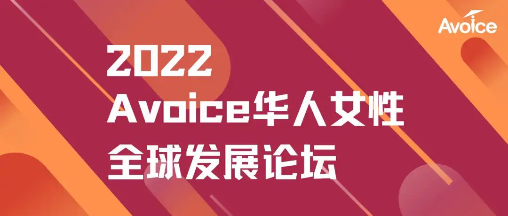

北京时间2023年1月7日，首届Avoice华人女性全球发展论坛圆满举行。论坛邀请了来自联合国妇女署、国际组织、学术机构、知名高校、科创公司等十余名国内外专家、学者线上参与，通过主题演讲、主题对谈、论文展示与评议三个环节，围绕科技、公益、职场、教育、法律、心理、政策等方面的性别数据，展开跨年龄段、跨领域、跨地区的知识分享与合作对话，在反性别暴力理论和实践方面为与会者提供了深刻且创新的观察视角。
#首届Avoice华人女性全球发展论坛集锦视频
在未来，Avoice将持续邀请来自社会各界的专家学者与行业领袖，在学术讨论的基础上，力求与公益实践相结合，以线上指导+线下协助的形式，为全球志愿者搭建知识共享网络，创造参与性别议题的实践机会，进一步拓展海外华人女性的生存空间和话语权。
#首届Avoice华人女性全球发展论坛中文回顾推文
#首届Avoice华人女性全球发展论坛英文回顾推文
内容来源｜Avoice Team
排版、封面制作｜戴翰林